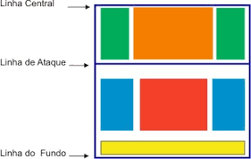

Footvolley is a type of collective sand sport practiced on courts set up on the edges, a sport very similar to volleyball. The sport originated on the beaches of Rio de Janeiro, grew within Brazil, as well as in Europe, Asia and the United States.
HISTORY OF FOOTVOOLEY
The creation of footvolley began with the attempt to circumvent a law that existed on the beaches of Rio.
In the 60s, the practice of soccer was prohibited on the beaches of Rio de Janeiro, so all sports that did not use a net and a safely delimited space could not be practiced on the spot.
Lovers of beach soccer, with the ban, imagined this sport with court and net, with boundaries as the law allowed, and this imagination led them to start playing soccer on the beach volleyball court (sport allowed).
Tatá, Ralph, Luiz Fernando "tananan", Airton, Adilton Brandão, Orlando "Pingo de Ouro", Feitosa, Frances, Carlson Gracie, Zé and Chico Brandão, Betão and Ricardinho started to hone the new modality.
Gradually, this practice gained adaptations, including the important players of Brazilian field football at the time, Dida and Vavá..
Jogador Vavá
Jogador Dida
RULES
Currently, this modality is a sport practice, it has clear structure and rules as we see below:
-The dimension of the court is 18 x 9 meters, cut by a net exactly in the middle. In addition, there must be a clear area of at least 3 meters beyond the demarcation lines and 8 meters above the ground. In official competitions, the boundaries of the free zone are even wider: five meters beyond the touchline, eight meters beyond the baseline and twelve meters above the ground;
-The floor of the court must always be made of sand, preferably quite level and always free from sharp objects that can injure the athletes. Officially, the floor sand must be of the fine type;
- The net measures 9.5 meters long by 1 meter wide, made of a 10x10 cm checkered mesh. It must be placed at a height of 2.20 meters. A curiosity is that advertisements are allowed to be posted on the network during matches;
-The ball used has a circumference between 68 and 70 centimeters and must be inflated with pressure between 0.56/0.63 kg/cm. And it is important that, in the same game, all the balls used have exactly the same characteristics;
-Footvolley matches can be played in doubles (two players on each side of the court) or in teams of five people (one of which is a reserve);
- Official uniforms include a t-shirt or jersey and shorts or shorts, which may or may not be numbered – 1 and 2, for doubles, and 1 to 5, for the group.;/
-The game starts after the first service, which is given by the referee's whistle. The service must be executed through the touch with the feet and must cross the net on top, reaching the area of the opponent's court. The place for the service is called the “service zone” and it extends from the bottom demarcation line to the edge of the free zone;
- Demarcation lines are considered the playing area. Therefore, if the opponent's play causes the ball to fall over the demarcation line, the point is valid for the opponent;
- As in volleyball, the ball must be touched between one and three times before returning it to the opposing team, if a player touches the ball twice it is an error and a point for the opposing team, if a player touches the net it is an error and a point for the opposing duo.
The ball can be passed to the opponent's court on the first, second or third touch.
Touch can be performed with any part of the body, with the exception of the arms, forearms and hands;
The serve pile is outside the court behind the marking line.
If one or two players leave the match before the end of the match, regardless of the score, the opposing team wins.
If the player passes the ball to the opponent's court outside the net, it is an error and a point for the opposing team.
Ball in the arm is considered a hand, therefore it is a mistake and a point for the opposing duo.
The ball is considered out when its entire dimension exceeds and does not move the marking line.
- Generally, matches are made up of three sets, with 15 points each.
Footvolley fundamentals and techniques:
Are they:
1. Withdrawal
Goal: To throw the ball to the opponent's court, going over the net and making reception difficult.
How to do it: Performed with the foot, placing the ball under a small pile of sand, varying the region of the foot where it is kicked: inner side, outer part, “toe”, “instep”. The serve can be done with or without effect on the ball, hitting the ball with a “dry” kick.
2. Reception
Goal: Execute the pass to the partner so that he can make the set or attack more easily.
How to do it: With any part of the body, except hands and arms, of course. The choice of how the reception will be made, with the chest, head, shoulders, thigh or foot, will depend on how the serve comes.
3. Lifting
Goal: Make the pass accurately, leaving the partner in good condition to make the attack and score the point.
How to: Executed with the region that is most favorable at the moment.
4. Attack
Goal: Throw the ball into the opposite court to score the point or make it difficult to defend.
Types of attacks in Footvolley:
Shark: The player hits the ball with his foot, the ball has to pass over the net, as if it were a cut with his feet.
Strong: Uses force when hitting the ball, increasing speed.
Short: The famous dribble, making the ball fall close to the opponent's net.
Long: The player uses force and tries to get the ball to the back of the opponent's court.
Diagonal: Hits the ball short or long, diagonally.
Parallel: Try to hit the ball to the touchline.
5. Defense
Goal:Prevent the ball from touching the ground of your court when the rival duo executes the attack.
How to:The following factors must be taken into account for a good defense:
Correct positioning of the pair on the court.
Anticipating the move, watching the opponent and predicting (anticipating) how he will attack, so you better decide where and how to defend.
Footvolley Strategies and Tactics for Defense
The strategies and tactics for the defense, starts with a division of the court by Zones of Greater Incidence of the ball to fall. So that the understanding of footvolley is easier.

Footvolley court
Rectangle in the center in orange:- zone protected by the lock, single or double
Rectangle in green:- zone of greater incidence of "dropped" balls;
Blue rectangle:- zone of greater incidence of balls attacked with force;
Yellow rectangle:- zone with the highest incidence of balls attacked with a strategic objective in blocking;
Red square:- zone with the highest incidence of balls attacked by failure to block.
In the image above a division of the court is shown, the time incidence of the balls varies:
-Place where the ball is thrown, the characteristics of the individual players, the 'emotion' of the game/players.
With these variations, adjustments are necessary from team to team, trying to adapt to the defensive system to take advantage of the other team. In order to have a faster adjustment, you need to have adequate defense and blocking positioning.
Categories that compete in Footvolley
The sport is played in seven categories, Beginner, Mixed Beginner, Serie C, Serie B, Mixed Open, Professional Men and Professional Women.